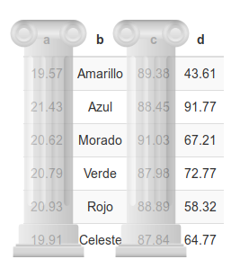

02A - Manejo de datos
Si quieres correr este script localmente, acá puedes descargar el proyecto comprimido en .zip. Paquetes que necesitas tener instalados antes de comenzar con el proyecto (2A, 2B, 2C, 2D):
tidyverse,janitor,writexl,learnr.
Manejo de bases de datos
Manejo de datos = limpiar y ordenar datos para poder analizarlos.
Se suele decir que el 80% del análisis de datos es solo manejo (Wickham, 2014).

Fuente: Wickham & Grolemund (2017)
Partes de una base de datos tabular

- Encabezado (header)
- Fila (row)
- Columna (column)
- Celda (cell)
Una pequeña mnemotecnia:

La base de datos ideal: tidy
- En el paradigma “tidy” (Wickham, 2014):
- Cada variable es una columna
- Cada observación es una fila
- Cada valor es una celda
- Existe una base de datos para cada unidad observacional

(Ejercicio A)
- Por favor revisar este link.
- Contiene un panel para las emisiones anuales de CO2 de los países americanos (unidad de medida: toneladas per capita).
- Hay tres bases con la misma información, una por cada hoja. ¿Cuál es la “tidy”?
Operaciones básicas en bases de datos (Wickham, 2014)
- Transformar columnas (añadir o modificar existentes)
- Puede ser en una sola columna o en múltiples columnas
- En el tidyverse,
mutate()
- Seleccionar columnas (y excluir otras)
- En el tidyverse,
select()
- En el tidyverse,
- Filtrar observaciones en base a una condición
- En el tidyverse,
filter()
- En el tidyverse,
- Ordenar la base de datos, en base a una(s) variable(s)
- En el tidyverse,
arrange()
- En el tidyverse,
- Agregar/colapsar la base de datos
- Colapsar múltiples valores en algún resumen (por ejemplo, media o suma)
- Puede ser para toda la base o por subgrupos
- En el tidyverse,
summarize()
(Ejercicio B)
Favor ir a este link
¿Qué operaciones básicas pueden ser interesantes para comenzar a analizar estos datos? Contesta con dos ejemplos:
Trabajo con R
Comenzaremos cargando el tidyverse:
library(tidyverse)Base de datos: aprobación de presidentes/as en Latinoamérica
Tenemos una base de datos ligeramente editada a partir de Reyes-Housholder (2019).
- Incluye también un par de variables de los World Development Indicators, recopiladas por Quality of Government.
La base de datos se encuentra en
datos/base_aprob_reyes-housholder.csv.Contiene información de la aprobación de presidentes/as en 17 países de América Latina por trimestre (2000-2014), además de variables de control.
- ¿Cuál es la unidad de análisis de la base? ¿Cuántas observaciones tendrá, asumiendo un panel balanceado?
Carga de base en formato csv
df_aprob <- read_csv("datos/base_aprob_reyes-housholder.csv")## Parsed with column specification:
## cols(
## country = col_character(),
## year = col_double(),
## quarter = col_double(),
## president = col_character(),
## net_approval = col_double(),
## pres_sex = col_character(),
## pres_sex_d = col_double(),
## exec_corr = col_double(),
## gdp_growth = col_double(),
## unemp = col_double(),
## wdi_gdp = col_double(),
## wdi_pop = col_double()
## )Resúmenes simples para data frames
El resumen más simple de un objeto en R suele poder obtenerse con su nombre comando. Nota cómo debajo de cada nombre, algunas variables tienen <dbl> y otras <chr>. ¿Qué significa esto?
df_aprob## # A tibble: 1,020 x 12
## country year quarter president
## <chr> <dbl> <dbl> <chr>
## 1 Argentina 2000 1 Fernando de la ~
## 2 Argentina 2000 2 Fernando de la ~
## 3 Argentina 2000 3 Fernando de la ~
## 4 Argentina 2000 4 Fernando de la ~
## 5 Argentina 2001 1 Fernando de la ~
## 6 Argentina 2001 2 Fernando de la ~
## 7 Argentina 2001 3 Fernando de la ~
## 8 Argentina 2001 4 Fernando de la ~
## 9 Argentina 2002 1 Eduardo Alberto~
## 10 Argentina 2002 2 Eduardo Alberto~
## # ... with 1,010 more rows, and 8 more
## # variables: net_approval <dbl>,
## # pres_sex <chr>, pres_sex_d <dbl>,
## # exec_corr <dbl>, gdp_growth <dbl>,
## # unemp <dbl>, wdi_gdp <dbl>,
## # wdi_pop <dbl>Por cierto, podemos obtener un resumen similar clickeando nuestro objeto en el panel “Environment” (superior derecho) de RStudio. Esto es lo mismo que ocupar el comando View():
View(df_aprob)Otro resumen útil es la función glimpse() del tidyverse, que nos da otra perspectiva:
glimpse(df_aprob)## Rows: 1,020
## Columns: 12
## $ country <chr> "Argentina", "Argent~
## $ year <dbl> 2000, 2000, 2000, 20~
## $ quarter <dbl> 1, 2, 3, 4, 1, 2, 3,~
## $ president <chr> "Fernando de la Rúa"~
## $ net_approval <dbl> 40.126, 16.390, 23.9~
## $ pres_sex <chr> "male", "male", "mal~
## $ pres_sex_d <dbl> 0, 0, 0, 0, 0, 0, 0,~
## $ exec_corr <dbl> 14.01525, 14.01525, ~
## $ gdp_growth <dbl> -0.8, -0.8, -0.8, -0~
## $ unemp <dbl> 15.00, 15.00, 15.00,~
## $ wdi_gdp <dbl> 552151219031, 552151~
## $ wdi_pop <dbl> 37057452, 37057452, ~¿Qué significan las variables de esta base de datos? Completa la siguiente tabla:
| Variable | Descripción |
|---|---|
| country | País. |
| year | Año. |
| quarter | Trimestre. |
| president | Presidente/a. |
| net_approval | Aprobación neta del presidente/a (% aprobación - % rechazo). |
| pres_sex | |
| pres_sex_d | |
| exec_corr | Corrupción en el Ejecutivo, según V-Dem. De 0 a 100 (mayor es más corrupción). |
| gdp_growth | |
| unemp | |
| wdi_gdp | Producto interno bruto del país, ajustado por paridad de cambio (PPP) y constante en dólares del 2011. |
| wdi_pop |
Manejo de datos: operaciones básicas
En todas las operaciones básicas que veremos hoy el primer argumento en la función será el data frame a editar.
Seleccionar columnas con select()
Seleccionemos solo la columna de países:
select(df_aprob, country)## # A tibble: 1,020 x 1
## country
## <chr>
## 1 Argentina
## 2 Argentina
## 3 Argentina
## 4 Argentina
## 5 Argentina
## 6 Argentina
## 7 Argentina
## 8 Argentina
## 9 Argentina
## 10 Argentina
## # ... with 1,010 more rowsRecuerda que esto no creó ningún objeto nuevo, es solo un comando que estamos ejecutando en la consola. Si quisiéramos crear un objeto nuevo, tendríamos que asignarlo:
df_aprob_reducida <- select(df_aprob, country)
df_aprob_reducida## # A tibble: 1,020 x 1
## country
## <chr>
## 1 Argentina
## 2 Argentina
## 3 Argentina
## 4 Argentina
## 5 Argentina
## 6 Argentina
## 7 Argentina
## 8 Argentina
## 9 Argentina
## 10 Argentina
## # ... with 1,010 more rowsPodemos seleccionar múltiples columnas a la vez, separadas por comas:
select(df_aprob, country, year, unemp)## # A tibble: 1,020 x 3
## country year unemp
## <chr> <dbl> <dbl>
## 1 Argentina 2000 15
## 2 Argentina 2000 15
## 3 Argentina 2000 15
## 4 Argentina 2000 15
## 5 Argentina 2001 18.3
## 6 Argentina 2001 18.3
## 7 Argentina 2001 18.3
## 8 Argentina 2001 18.3
## 9 Argentina 2002 17.9
## 10 Argentina 2002 17.9
## # ... with 1,010 more rowsSupongamos que queremos las primeras cinco variables de la base de datos. Las siguientes tres formas nos permitirán obtenerlas:
select(df_aprob, country, year, quarter, president, net_approval)## # A tibble: 1,020 x 5
## country year quarter president
## <chr> <dbl> <dbl> <chr>
## 1 Argentina 2000 1 Fernando de la ~
## 2 Argentina 2000 2 Fernando de la ~
## 3 Argentina 2000 3 Fernando de la ~
## 4 Argentina 2000 4 Fernando de la ~
## 5 Argentina 2001 1 Fernando de la ~
## 6 Argentina 2001 2 Fernando de la ~
## 7 Argentina 2001 3 Fernando de la ~
## 8 Argentina 2001 4 Fernando de la ~
## 9 Argentina 2002 1 Eduardo Alberto~
## 10 Argentina 2002 2 Eduardo Alberto~
## # ... with 1,010 more rows, and 1 more
## # variable: net_approval <dbl>select(df_aprob, country:net_approval) # esta es la forma recomendada para la mayoría de los casos## # A tibble: 1,020 x 5
## country year quarter president
## <chr> <dbl> <dbl> <chr>
## 1 Argentina 2000 1 Fernando de la ~
## 2 Argentina 2000 2 Fernando de la ~
## 3 Argentina 2000 3 Fernando de la ~
## 4 Argentina 2000 4 Fernando de la ~
## 5 Argentina 2001 1 Fernando de la ~
## 6 Argentina 2001 2 Fernando de la ~
## 7 Argentina 2001 3 Fernando de la ~
## 8 Argentina 2001 4 Fernando de la ~
## 9 Argentina 2002 1 Eduardo Alberto~
## 10 Argentina 2002 2 Eduardo Alberto~
## # ... with 1,010 more rows, and 1 more
## # variable: net_approval <dbl>select(df_aprob, 1:5)## # A tibble: 1,020 x 5
## country year quarter president
## <chr> <dbl> <dbl> <chr>
## 1 Argentina 2000 1 Fernando de la ~
## 2 Argentina 2000 2 Fernando de la ~
## 3 Argentina 2000 3 Fernando de la ~
## 4 Argentina 2000 4 Fernando de la ~
## 5 Argentina 2001 1 Fernando de la ~
## 6 Argentina 2001 2 Fernando de la ~
## 7 Argentina 2001 3 Fernando de la ~
## 8 Argentina 2001 4 Fernando de la ~
## 9 Argentina 2002 1 Eduardo Alberto~
## 10 Argentina 2002 2 Eduardo Alberto~
## # ... with 1,010 more rows, and 1 more
## # variable: net_approval <dbl>El comando select() también nos sirve para reordenar las columnas. Supongamos que queremos que la variable president sea la primera. Podemos hacer algo como esto:
select(df_aprob, president, country:year, net_approval:unemp)## # A tibble: 1,020 x 9
## president country year net_approval
## <chr> <chr> <dbl> <dbl>
## 1 Fernando de ~ Argent~ 2000 40.1
## 2 Fernando de ~ Argent~ 2000 16.4
## 3 Fernando de ~ Argent~ 2000 24.0
## 4 Fernando de ~ Argent~ 2000 -18.3
## 5 Fernando de ~ Argent~ 2001 -6.97
## 6 Fernando de ~ Argent~ 2001 -20.1
## 7 Fernando de ~ Argent~ 2001 -19.4
## 8 Fernando de ~ Argent~ 2001 -23.2
## 9 Eduardo Albe~ Argent~ 2002 -2.01
## 10 Eduardo Albe~ Argent~ 2002 -20.1
## # ... with 1,010 more rows, and 5 more
## # variables: pres_sex <chr>,
## # pres_sex_d <dbl>, exec_corr <dbl>,
## # gdp_growth <dbl>, unemp <dbl>Esta forma es un poco tediosa. Hay una función de ayuda que nos será útil en este caso, se llama everything()
select(df_aprob, president, everything()) # selecciona "president" y todo lo demás## # A tibble: 1,020 x 12
## president country year quarter
## <chr> <chr> <dbl> <dbl>
## 1 Fernando de la R~ Argenti~ 2000 1
## 2 Fernando de la R~ Argenti~ 2000 2
## 3 Fernando de la R~ Argenti~ 2000 3
## 4 Fernando de la R~ Argenti~ 2000 4
## 5 Fernando de la R~ Argenti~ 2001 1
## 6 Fernando de la R~ Argenti~ 2001 2
## 7 Fernando de la R~ Argenti~ 2001 3
## 8 Fernando de la R~ Argenti~ 2001 4
## 9 Eduardo Alberto ~ Argenti~ 2002 1
## 10 Eduardo Alberto ~ Argenti~ 2002 2
## # ... with 1,010 more rows, and 8 more
## # variables: net_approval <dbl>,
## # pres_sex <chr>, pres_sex_d <dbl>,
## # exec_corr <dbl>, gdp_growth <dbl>,
## # unemp <dbl>, wdi_gdp <dbl>,
## # wdi_pop <dbl>Finalmente, también podemos excluir variables con un signo -:
select(df_aprob, -president)## # A tibble: 1,020 x 11
## country year quarter net_approval
## <chr> <dbl> <dbl> <dbl>
## 1 Argentina 2000 1 40.1
## 2 Argentina 2000 2 16.4
## 3 Argentina 2000 3 24.0
## 4 Argentina 2000 4 -18.3
## 5 Argentina 2001 1 -6.97
## 6 Argentina 2001 2 -20.1
## 7 Argentina 2001 3 -19.4
## 8 Argentina 2001 4 -23.2
## 9 Argentina 2002 1 -2.01
## 10 Argentina 2002 2 -20.1
## # ... with 1,010 more rows, and 7 more
## # variables: pres_sex <chr>,
## # pres_sex_d <dbl>, exec_corr <dbl>,
## # gdp_growth <dbl>, unemp <dbl>,
## # wdi_gdp <dbl>, wdi_pop <dbl>Renombrar columnas con rename()
Podemos cambiar el nombre de una columna con el comando rename(). Por ejemplo:
rename(df_aprob, trimeste = quarter) # noten que no estoy modificando la base, solo imprimiéndola!## # A tibble: 1,020 x 12
## country year trimeste president
## <chr> <dbl> <dbl> <chr>
## 1 Argenti~ 2000 1 Fernando de la ~
## 2 Argenti~ 2000 2 Fernando de la ~
## 3 Argenti~ 2000 3 Fernando de la ~
## 4 Argenti~ 2000 4 Fernando de la ~
## 5 Argenti~ 2001 1 Fernando de la ~
## 6 Argenti~ 2001 2 Fernando de la ~
## 7 Argenti~ 2001 3 Fernando de la ~
## 8 Argenti~ 2001 4 Fernando de la ~
## 9 Argenti~ 2002 1 Eduardo Alberto~
## 10 Argenti~ 2002 2 Eduardo Alberto~
## # ... with 1,010 more rows, and 8 more
## # variables: net_approval <dbl>,
## # pres_sex <chr>, pres_sex_d <dbl>,
## # exec_corr <dbl>, gdp_growth <dbl>,
## # unemp <dbl>, wdi_gdp <dbl>,
## # wdi_pop <dbl>Filtrar observaciones con filter()
A menudo queremos quedarnos solo con algunas observaciones de nuestra base de datos, filtrando de acuerdo a características específicas. Podemos hacer esto gracias a la función filter() y algo llamado “operadores lógicos”. Para comenzar, quedémonos solo con las observaciones de Chile:
filter(df_aprob, country == "Chile")## # A tibble: 60 x 12
## country year quarter president
## <chr> <dbl> <dbl> <chr>
## 1 Chile 2000 1 Eduardo Frei Ruiz~
## 2 Chile 2000 2 Ricardo Lagos Esc~
## 3 Chile 2000 3 Ricardo Lagos Esc~
## 4 Chile 2000 4 Ricardo Lagos Esc~
## 5 Chile 2001 1 Ricardo Lagos Esc~
## 6 Chile 2001 2 Ricardo Lagos Esc~
## 7 Chile 2001 3 Ricardo Lagos Esc~
## 8 Chile 2001 4 Ricardo Lagos Esc~
## 9 Chile 2002 1 Ricardo Lagos Esc~
## 10 Chile 2002 2 Ricardo Lagos Esc~
## # ... with 50 more rows, and 8 more
## # variables: net_approval <dbl>,
## # pres_sex <chr>, pres_sex_d <dbl>,
## # exec_corr <dbl>, gdp_growth <dbl>,
## # unemp <dbl>, wdi_gdp <dbl>,
## # wdi_pop <dbl>Le estamos diciendo a filter(), por medio del segundo argumento, que solo se quede con observaciones en las que la variable country es igual a Chile. Este “es igual a” es un operador lógico, que se escribe como “==” en R. Aquí hay una lista de operadores lógicos comunes:
| operador | descripción |
|---|---|
== |
es igual a |
!= |
es distinto a |
> |
es mayor a |
< |
es menor a |
>= |
es mayor o igual a |
<= |
es menor o igual a |
& |
intersección |
| |
unión |
%in% |
está contenido en |
Por ejemplo, podemos obtener todas las observaciones (país-año-trimestre) en las que la aprobación presidencial neta es positiva:
filter(df_aprob, net_approval > 0)## # A tibble: 709 x 12
## country year quarter president
## <chr> <dbl> <dbl> <chr>
## 1 Argentina 2000 1 Fernando de la ~
## 2 Argentina 2000 2 Fernando de la ~
## 3 Argentina 2000 3 Fernando de la ~
## 4 Argentina 2003 2 Eduardo Alberto~
## 5 Argentina 2003 3 Néstor Carlos K~
## 6 Argentina 2003 4 Néstor Carlos K~
## 7 Argentina 2004 1 Néstor Carlos K~
## 8 Argentina 2004 2 Néstor Carlos K~
## 9 Argentina 2004 3 Néstor Carlos K~
## 10 Argentina 2004 4 Néstor Carlos K~
## # ... with 699 more rows, and 8 more
## # variables: net_approval <dbl>,
## # pres_sex <chr>, pres_sex_d <dbl>,
## # exec_corr <dbl>, gdp_growth <dbl>,
## # unemp <dbl>, wdi_gdp <dbl>,
## # wdi_pop <dbl>Podemos también realizar filtros más complejos. Obtengamos solo las observaciones del Cono Sur:
filter(df_aprob, country == "Argentina" | country == "Chile" | country == "Uruguay")## # A tibble: 180 x 12
## country year quarter president
## <chr> <dbl> <dbl> <chr>
## 1 Argentina 2000 1 Fernando de la ~
## 2 Argentina 2000 2 Fernando de la ~
## 3 Argentina 2000 3 Fernando de la ~
## 4 Argentina 2000 4 Fernando de la ~
## 5 Argentina 2001 1 Fernando de la ~
## 6 Argentina 2001 2 Fernando de la ~
## 7 Argentina 2001 3 Fernando de la ~
## 8 Argentina 2001 4 Fernando de la ~
## 9 Argentina 2002 1 Eduardo Alberto~
## 10 Argentina 2002 2 Eduardo Alberto~
## # ... with 170 more rows, and 8 more
## # variables: net_approval <dbl>,
## # pres_sex <chr>, pres_sex_d <dbl>,
## # exec_corr <dbl>, gdp_growth <dbl>,
## # unemp <dbl>, wdi_gdp <dbl>,
## # wdi_pop <dbl>filter(df_aprob, country %in% c("Argentina", "Chile", "Uruguay")) # lo mismo, con otro op. lógico## # A tibble: 180 x 12
## country year quarter president
## <chr> <dbl> <dbl> <chr>
## 1 Argentina 2000 1 Fernando de la ~
## 2 Argentina 2000 2 Fernando de la ~
## 3 Argentina 2000 3 Fernando de la ~
## 4 Argentina 2000 4 Fernando de la ~
## 5 Argentina 2001 1 Fernando de la ~
## 6 Argentina 2001 2 Fernando de la ~
## 7 Argentina 2001 3 Fernando de la ~
## 8 Argentina 2001 4 Fernando de la ~
## 9 Argentina 2002 1 Eduardo Alberto~
## 10 Argentina 2002 2 Eduardo Alberto~
## # ... with 170 more rows, and 8 more
## # variables: net_approval <dbl>,
## # pres_sex <chr>, pres_sex_d <dbl>,
## # exec_corr <dbl>, gdp_growth <dbl>,
## # unemp <dbl>, wdi_gdp <dbl>,
## # wdi_pop <dbl>Podemos también incluir pequeñas operaciones en nuestros filtros. Obtengamos todas las observaciones en las que la corrupción ejecutiva es mayor a la del promedio de toda la base:
filter(df_aprob, exec_corr > mean(exec_corr))## # A tibble: 456 x 12
## country year quarter president
## <chr> <dbl> <dbl> <chr>
## 1 Argentina 2003 1 Eduardo Alberto~
## 2 Argentina 2003 2 Eduardo Alberto~
## 3 Argentina 2003 3 Néstor Carlos K~
## 4 Argentina 2003 4 Néstor Carlos K~
## 5 Argentina 2004 1 Néstor Carlos K~
## 6 Argentina 2004 2 Néstor Carlos K~
## 7 Argentina 2004 3 Néstor Carlos K~
## 8 Argentina 2004 4 Néstor Carlos K~
## 9 Argentina 2005 1 Néstor Carlos K~
## 10 Argentina 2005 2 Néstor Carlos K~
## # ... with 446 more rows, and 8 more
## # variables: net_approval <dbl>,
## # pres_sex <chr>, pres_sex_d <dbl>,
## # exec_corr <dbl>, gdp_growth <dbl>,
## # unemp <dbl>, wdi_gdp <dbl>,
## # wdi_pop <dbl>(Ejercicios C)
(C1) Selecciona solo las dos columnas que registran el sexo del presidente/a en la base de datos. Recuerda que los chunks se insertan con Ctrl/Cmd + Alt + i. Tu código:
(C2) Filtra la base de datos para que solo tenga las observaciones del año 2000. Tu código:
(C3) Filtra la base de datos para que solo incluya observaciones de crisis económica: cuando el crecimiento del PIB sea negativo y/o el desempleo sea mayor al 20%. Tu código:
Ordenar el data frame con arrange()
Podemos cambiar el orden de las observaciones con el comando arrange(). Por ejemplo, ordenémoslas desde el país-año-trimestre menos corrupto al más corrupto:
arrange(df_aprob, exec_corr)## # A tibble: 1,020 x 12
## country year quarter president
## <chr> <dbl> <dbl> <chr>
## 1 Uruguay 2000 1 Julio Sanguietti
## 2 Uruguay 2000 2 Jorge Battle
## 3 Uruguay 2000 3 Jorge Battle
## 4 Uruguay 2000 4 Jorge Battle
## 5 Uruguay 2001 1 Jorge Battle
## 6 Uruguay 2001 2 Jorge Battle
## 7 Uruguay 2001 3 Jorge Battle
## 8 Uruguay 2001 4 Jorge Battle
## 9 Uruguay 2002 1 Jorge Battle
## 10 Uruguay 2002 2 Jorge Battle
## # ... with 1,010 more rows, and 8 more
## # variables: net_approval <dbl>,
## # pres_sex <chr>, pres_sex_d <dbl>,
## # exec_corr <dbl>, gdp_growth <dbl>,
## # unemp <dbl>, wdi_gdp <dbl>,
## # wdi_pop <dbl>Si quisiéramos ordenarlo inversamente, tendríamos que añadir un - (signo menos) antes de la variable:
arrange(df_aprob, -exec_corr)## # A tibble: 1,020 x 12
## country year quarter president
## <chr> <dbl> <dbl> <chr>
## 1 Venezuela 2013 1 Hugo Chávez
## 2 Venezuela 2013 2 Nicolás Maduro
## 3 Venezuela 2013 3 Nicolás Maduro
## 4 Venezuela 2013 4 Nicolás Maduro
## 5 Venezuela 2014 1 Nicolás Maduro
## 6 Venezuela 2014 2 Nicolás Maduro
## 7 Venezuela 2014 3 Nicolás Maduro
## 8 Venezuela 2014 4 Nicolás Maduro
## 9 Venezuela 2007 1 Hugo Chávez
## 10 Venezuela 2007 2 Hugo Chávez
## # ... with 1,010 more rows, and 8 more
## # variables: net_approval <dbl>,
## # pres_sex <chr>, pres_sex_d <dbl>,
## # exec_corr <dbl>, gdp_growth <dbl>,
## # unemp <dbl>, wdi_gdp <dbl>,
## # wdi_pop <dbl>Atención, lo anterior solo sirve en columnas numéricas. Para ordenar una categórica inversamente, debemos usar el comando desc():
arrange(df_aprob, desc(country))## # A tibble: 1,020 x 12
## country year quarter president
## <chr> <dbl> <dbl> <chr>
## 1 Venezuela 2000 1 Hugo Chávez
## 2 Venezuela 2000 2 Hugo Chávez
## 3 Venezuela 2000 3 Hugo Chávez
## 4 Venezuela 2000 4 Hugo Chávez
## 5 Venezuela 2001 1 Hugo Chávez
## 6 Venezuela 2001 2 Hugo Chávez
## 7 Venezuela 2001 3 Hugo Chávez
## 8 Venezuela 2001 4 Hugo Chávez
## 9 Venezuela 2002 1 Hugo Chávez
## 10 Venezuela 2002 2 Hugo Chávez
## # ... with 1,010 more rows, and 8 more
## # variables: net_approval <dbl>,
## # pres_sex <chr>, pres_sex_d <dbl>,
## # exec_corr <dbl>, gdp_growth <dbl>,
## # unemp <dbl>, wdi_gdp <dbl>,
## # wdi_pop <dbl>Podemos ordenar por más de una variable. Esto es, ordenar a partir de una primera variable y luego ordenar los empates a partir de otra segunda variable. Veamos el siguiente ejemplo:
arrange(df_aprob, pres_sex, -net_approval)## # A tibble: 1,020 x 12
## country year quarter president
## <chr> <dbl> <dbl> <chr>
## 1 Brazil 2013 1 Dilma Vana Rouss~
## 2 Brazil 2012 4 Dilma Vana Rouss~
## 3 Brazil 2012 2 Dilma Vana Rouss~
## 4 Brazil 2012 3 Dilma Vana Rouss~
## 5 Brazil 2012 1 Dilma Vana Rouss~
## 6 Brazil 2011 4 Dilma Vana Rouss~
## 7 Brazil 2011 1 Dilma Vana Rouss~
## 8 Brazil 2011 3 Dilma Vana Rouss~
## 9 Brazil 2013 2 Dilma Vana Rouss~
## 10 Argenti~ 2011 4 Cristina Fernánd~
## # ... with 1,010 more rows, and 8 more
## # variables: net_approval <dbl>,
## # pres_sex <chr>, pres_sex_d <dbl>,
## # exec_corr <dbl>, gdp_growth <dbl>,
## # unemp <dbl>, wdi_gdp <dbl>,
## # wdi_pop <dbl>Transformar variables con mutate()
Transformaciones con una variable
Supongamos que queremos crear una variable con el PIB en versión logarítmica:
mutate(df_aprob, wdi_gdp_log = log(wdi_gdp))## # A tibble: 1,020 x 13
## country year quarter president
## <chr> <dbl> <dbl> <chr>
## 1 Argentina 2000 1 Fernando de la ~
## 2 Argentina 2000 2 Fernando de la ~
## 3 Argentina 2000 3 Fernando de la ~
## 4 Argentina 2000 4 Fernando de la ~
## 5 Argentina 2001 1 Fernando de la ~
## 6 Argentina 2001 2 Fernando de la ~
## 7 Argentina 2001 3 Fernando de la ~
## 8 Argentina 2001 4 Fernando de la ~
## 9 Argentina 2002 1 Eduardo Alberto~
## 10 Argentina 2002 2 Eduardo Alberto~
## # ... with 1,010 more rows, and 9 more
## # variables: net_approval <dbl>,
## # pres_sex <chr>, pres_sex_d <dbl>,
## # exec_corr <dbl>, gdp_growth <dbl>,
## # unemp <dbl>, wdi_gdp <dbl>,
## # wdi_pop <dbl>, wdi_gdp_log <dbl>Podemos realizar cualquier tipo de operación en las variables. Por ejemplo, transformemos la escala de wdi_pop a millones:
mutate(df_aprob, wdi_pop_mill = wdi_pop / 1000000)## # A tibble: 1,020 x 13
## country year quarter president
## <chr> <dbl> <dbl> <chr>
## 1 Argentina 2000 1 Fernando de la ~
## 2 Argentina 2000 2 Fernando de la ~
## 3 Argentina 2000 3 Fernando de la ~
## 4 Argentina 2000 4 Fernando de la ~
## 5 Argentina 2001 1 Fernando de la ~
## 6 Argentina 2001 2 Fernando de la ~
## 7 Argentina 2001 3 Fernando de la ~
## 8 Argentina 2001 4 Fernando de la ~
## 9 Argentina 2002 1 Eduardo Alberto~
## 10 Argentina 2002 2 Eduardo Alberto~
## # ... with 1,010 more rows, and 9 more
## # variables: net_approval <dbl>,
## # pres_sex <chr>, pres_sex_d <dbl>,
## # exec_corr <dbl>, gdp_growth <dbl>,
## # unemp <dbl>, wdi_gdp <dbl>,
## # wdi_pop <dbl>, wdi_pop_mill <dbl>Transformaciones con múltiples variables
Crucialmente, podemos generar operaciones entre las variables. Por ejemplo, calculemos el GDP per capita:
mutate(df_aprob, wdi_gdp_pc = wdi_gdp / wdi_pop)## # A tibble: 1,020 x 13
## country year quarter president
## <chr> <dbl> <dbl> <chr>
## 1 Argentina 2000 1 Fernando de la ~
## 2 Argentina 2000 2 Fernando de la ~
## 3 Argentina 2000 3 Fernando de la ~
## 4 Argentina 2000 4 Fernando de la ~
## 5 Argentina 2001 1 Fernando de la ~
## 6 Argentina 2001 2 Fernando de la ~
## 7 Argentina 2001 3 Fernando de la ~
## 8 Argentina 2001 4 Fernando de la ~
## 9 Argentina 2002 1 Eduardo Alberto~
## 10 Argentina 2002 2 Eduardo Alberto~
## # ... with 1,010 more rows, and 9 more
## # variables: net_approval <dbl>,
## # pres_sex <chr>, pres_sex_d <dbl>,
## # exec_corr <dbl>, gdp_growth <dbl>,
## # unemp <dbl>, wdi_gdp <dbl>,
## # wdi_pop <dbl>, wdi_gdp_pc <dbl>Varias transformaciones a la vez:
Algo como lo siguiente funcionará:
mutate(df_aprob,
wdi_pop_mill = wdi_pop / 1000000,
wdi_gdp_pc = wdi_gdp / wdi_pop)## # A tibble: 1,020 x 14
## country year quarter president
## <chr> <dbl> <dbl> <chr>
## 1 Argentina 2000 1 Fernando de la ~
## 2 Argentina 2000 2 Fernando de la ~
## 3 Argentina 2000 3 Fernando de la ~
## 4 Argentina 2000 4 Fernando de la ~
## 5 Argentina 2001 1 Fernando de la ~
## 6 Argentina 2001 2 Fernando de la ~
## 7 Argentina 2001 3 Fernando de la ~
## 8 Argentina 2001 4 Fernando de la ~
## 9 Argentina 2002 1 Eduardo Alberto~
## 10 Argentina 2002 2 Eduardo Alberto~
## # ... with 1,010 more rows, and 10 more
## # variables: net_approval <dbl>,
## # pres_sex <chr>, pres_sex_d <dbl>,
## # exec_corr <dbl>, gdp_growth <dbl>,
## # unemp <dbl>, wdi_gdp <dbl>,
## # wdi_pop <dbl>, wdi_pop_mill <dbl>,
## # wdi_gdp_pc <dbl>(Ejercicio D)
Crea un nuevo data frame, que esté ordenado desde el país-año-trimeste con menor aprobación presidencial al con mayor aprobación presidencial (recuerda crear el nuevo objeto y ponerle un buen nombre!). Tu código:
En tu nuevo objeto, obtén solo con las observaciones que tengan presidentas. Tu código:
Crea una nueva variable, que registre el desempleo como proporción en vez de porcentaje. Tu código:
Agregar/colapsar con summarize() / hacer operaciones por grupos con group_by()
Podemos hacer resúmenes para la base de datos con summarize:
summarize(df_aprob, prom_desemp = mean(unemp))## # A tibble: 1 x 1
## prom_desemp
## <dbl>
## 1 7.04Como antes, podemos hacer varios a la vez:
summarize(df_aprob,
prom_desemp = mean(unemp),
prom_crec = mean(gdp_growth),
prom_aprob = mean(net_approval))## # A tibble: 1 x 3
## prom_desemp prom_crec prom_aprob
## <dbl> <dbl> <dbl>
## 1 7.04 3.77 15.3Resúmenes agrupados
Lo realmente interesante es hacer resúmenes por grupos. Primero debemos tener una versión “agrupada” de la base de datos. Esta es igual que nuestra base original, pero R sabe que las siguientes operaciones que realicemos en ella deberán ser agrupadas (veamos la ligera diferencia cuando hacemos un resumen con glimpse())
df_aprob_por_pais <- group_by(df_aprob, country)
glimpse(df_aprob_por_pais)## Rows: 1,020
## Columns: 12
## Groups: country [17]
## $ country <chr> "Argentina", "Argent~
## $ year <dbl> 2000, 2000, 2000, 20~
## $ quarter <dbl> 1, 2, 3, 4, 1, 2, 3,~
## $ president <chr> "Fernando de la Rúa"~
## $ net_approval <dbl> 40.126, 16.390, 23.9~
## $ pres_sex <chr> "male", "male", "mal~
## $ pres_sex_d <dbl> 0, 0, 0, 0, 0, 0, 0,~
## $ exec_corr <dbl> 14.01525, 14.01525, ~
## $ gdp_growth <dbl> -0.8, -0.8, -0.8, -0~
## $ unemp <dbl> 15.00, 15.00, 15.00,~
## $ wdi_gdp <dbl> 552151219031, 552151~
## $ wdi_pop <dbl> 37057452, 37057452, ~Hagamos una operación de resumen en esta nueva base:
summarize(df_aprob_por_pais,
prom_desemp = mean(unemp),
prom_crec = mean(gdp_growth),
prom_aprob = mean(net_approval))## # A tibble: 17 x 4
## country prom_desemp prom_crec prom_aprob
## <chr> <dbl> <dbl> <dbl>
## 1 Argent~ 11.0 2.72 16.7
## 2 Bolivia 3.70 4.24 11.3
## 3 Brazil 8.35 3.4 34.2
## 4 Chile 8.18 4.33 5.71
## 5 Colomb~ 12.5 4.35 27.1
## 6 Costa ~ 6.73 4.15 14.5
## 7 Ecuador 6.76 4.31 37.1
## 8 El Sal~ 5.75 1.87 39.1
## 9 Guatem~ 2.80 3.47 5.44
## 10 Hondur~ 4.22 4.08 12.7
## 11 Mexico 3.99 2.10 28.9
## 12 Nicara~ 6.78 3.73 16.2
## 13 Panama 8.45 6.31 14.2
## 14 Paragu~ 5.69 3.66 10.9
## 15 Peru 4.32 5.30 -26.2
## 16 Uruguay 10.3 3.08 26.9
## 17 Venezu~ 10.3 3.04 -14.8Hacer cadenas de operaciones con las pipes (%>%)
La mayor parte del tiempo queremos hacer más de una operación en una base de datos. Por ejemplo, podríamos querer (1) crear una nueva variable con PIB per capita, y luego (2) filtrar las observaciones con valores iguales o mayores a la media de PIB per capita en toda la base:
df_aprob_con_pib_pc <- mutate(df_aprob, pib_pc = wdi_gdp / wdi_pop)
filter(df_aprob_con_pib_pc, pib_pc > mean(pib_pc))## # A tibble: 492 x 13
## country year quarter president
## <chr> <dbl> <dbl> <chr>
## 1 Argentina 2000 1 Fernando de la ~
## 2 Argentina 2000 2 Fernando de la ~
## 3 Argentina 2000 3 Fernando de la ~
## 4 Argentina 2000 4 Fernando de la ~
## 5 Argentina 2001 1 Fernando de la ~
## 6 Argentina 2001 2 Fernando de la ~
## 7 Argentina 2001 3 Fernando de la ~
## 8 Argentina 2001 4 Fernando de la ~
## 9 Argentina 2002 1 Eduardo Alberto~
## 10 Argentina 2002 2 Eduardo Alberto~
## # ... with 482 more rows, and 9 more
## # variables: net_approval <dbl>,
## # pres_sex <chr>, pres_sex_d <dbl>,
## # exec_corr <dbl>, gdp_growth <dbl>,
## # unemp <dbl>, wdi_gdp <dbl>,
## # wdi_pop <dbl>, pib_pc <dbl>Esta misma cadena de operaciones se puede escribir de la siguiente forma:
df_aprob %>%
mutate(pib_pc = wdi_gdp / wdi_pop) %>%
filter(pib_pc > mean(pib_pc))## # A tibble: 492 x 13
## country year quarter president
## <chr> <dbl> <dbl> <chr>
## 1 Argentina 2000 1 Fernando de la ~
## 2 Argentina 2000 2 Fernando de la ~
## 3 Argentina 2000 3 Fernando de la ~
## 4 Argentina 2000 4 Fernando de la ~
## 5 Argentina 2001 1 Fernando de la ~
## 6 Argentina 2001 2 Fernando de la ~
## 7 Argentina 2001 3 Fernando de la ~
## 8 Argentina 2001 4 Fernando de la ~
## 9 Argentina 2002 1 Eduardo Alberto~
## 10 Argentina 2002 2 Eduardo Alberto~
## # ... with 482 more rows, and 9 more
## # variables: net_approval <dbl>,
## # pres_sex <chr>, pres_sex_d <dbl>,
## # exec_corr <dbl>, gdp_growth <dbl>,
## # unemp <dbl>, wdi_gdp <dbl>,
## # wdi_pop <dbl>, pib_pc <dbl>¡Este código es sorprendemente legible! Las pipes (%>%) se leen como “luego” (o “pero luego”) y se insertan con Ctrl/Cmd + Shift + M en RStudio. Pueden ver todos los atajos de teclado en Help > Keyboard Shortcuts Help.
Uno de los usos más comunes de las pipes es el combo group_by() + summarize(). Repitamos nuestras operaciones de antes para hacer un resumen agrupado:
df_aprob %>%
group_by(country) %>%
summarize(prom_desemp = mean(unemp),
prom_crec = mean(gdp_growth),
prom_aprob = mean(net_approval))## # A tibble: 17 x 4
## country prom_desemp prom_crec prom_aprob
## <chr> <dbl> <dbl> <dbl>
## 1 Argent~ 11.0 2.72 16.7
## 2 Bolivia 3.70 4.24 11.3
## 3 Brazil 8.35 3.4 34.2
## 4 Chile 8.18 4.33 5.71
## 5 Colomb~ 12.5 4.35 27.1
## 6 Costa ~ 6.73 4.15 14.5
## 7 Ecuador 6.76 4.31 37.1
## 8 El Sal~ 5.75 1.87 39.1
## 9 Guatem~ 2.80 3.47 5.44
## 10 Hondur~ 4.22 4.08 12.7
## 11 Mexico 3.99 2.10 28.9
## 12 Nicara~ 6.78 3.73 16.2
## 13 Panama 8.45 6.31 14.2
## 14 Paragu~ 5.69 3.66 10.9
## 15 Peru 4.32 5.30 -26.2
## 16 Uruguay 10.3 3.08 26.9
## 17 Venezu~ 10.3 3.04 -14.8(Ejercicios E-G)
E. Calcula, ayudándote de las pipes, la mediana por país de corrupción ejecutiva y PIB. Recuerda que puedes insertar chunks con Ctrl/Cmd + Alt + i y pipes con Ctrl/Cmd + Shift + M. Tu código:
F. De nuevo usando pipes, ordena los países en la base desde el que tuvo el mayor PIB per cápita promedio en el período 2010-2014 hasta el que tuvo el menor. Tu código:
G. ¿Qué país-año-trimestre, entre los gobernados por mujeres, tuvo la corrupción ejecutiva más alta? ¿Y la aprobación neta más alta?